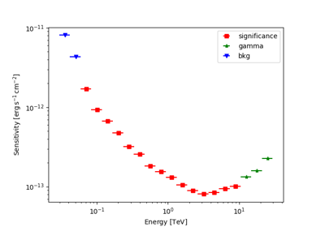
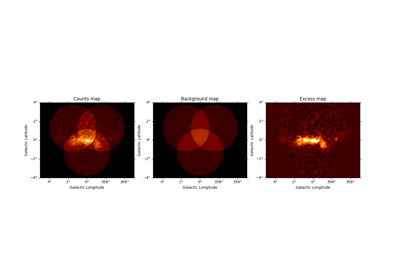

Data reduction (DL3 to DL4)#
The gammapy.makers sub-package contains classes to perform data reduction tasks
from DL3 data to binned datasets. In the data reduction step the DL3 data is prepared for modeling and fitting,
by binning events into a counts map and interpolating the exposure, background,
psf and energy dispersion on the chosen analysis geometry.
Background estimation#
Safe data range definition#
The definition of a safe data range is done using the SafeMaskMaker or manually.
Using gammapy.makers#
Examples using gammapy.makers.MapDatasetMaker#



Point source sensitivity


Spectral analysis with energy-dependent directional cuts
Spectral analysis with energy-dependent directional cuts


Basic image exploration and fitting
Basic image exploration and fitting


Sample a source with energy-dependent temporal evolution
Sample a source with energy-dependent temporal evolution


Examples using gammapy.makers.SpectrumDatasetMaker#
Point source sensitivity
Spectral analysis with energy-dependent directional cuts
Spectral analysis with energy-dependent directional cuts
Basic image exploration and fitting
Basic image exploration and fitting